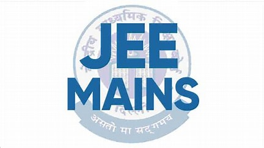

Indian Institutes of Technology (IITs) are institutions of national
importance established through Acts of Parliament for fostering
excellence in education.
Admission to various undergraduate programs across IITs is carried
out through the Joint Entrance Examination (Advanced) [JEE
(Advanced)].
Through JEE (Advanced), IITs offer admission into undergraduate
courses leading to a Bachelors, Integrated Masters, Bachelor-Master
Dual Degree in Engineering, Sciences, or Architecture.
Jee Mains
The Joint Entrance Examination, JEE (Main) comprises two papers.
Paper 1 is conducted for admission to Undergraduate Engineering
Programs (B.E/B.Tech.) at NITs, IIITs, other Centrally Funded
Technical Institutions (CFTIs), and Institutions/Universities
funded/recognized by participating State Governments.
JEE (Main) is also an eligibility test for JEE (Advanced), which is
conducted for admission to IITs.
Paper 2 is conducted for admission to B. Arch and B. Planning
courses in the country.

NEET
The NEET (UG) has been conducted as a common and uniform National
Eligibility-cum-Entrance Test [NEET (UG)] for admission to
undergraduate medical education in all medical institutions.
The NEET (UG) - 2023 is going to be conducted by NTA as per the
Schedule given in the Information at a Glance for admission to MBBS,
BDS, BAMS, BSMS, BUMS, and BHMS Courses under the medical
institutions governed as per the relevant
norms/guidelines/regulations notified by the concerned Regulatory
Bodies under the NCISM Act, 2020 and NCH Act, 2020.
NTSE
NTSE exam is the National level scholarship program by Govt. of
India and most venerated exam of India.
It is not only about scholarship but a matter of great pride and
honour for every student to be recognised as the nation’s talent.
The NTSE (National Talent Search Examination) examination is
conducted every year at two levels – Stage I (State level) and Stage
II (National Level). NTSE Stage I is conducted by States and NTSE
Stage II is conducted by NCERT.
KVPY
The "Kishore Vaigyanik Protsahan Yojana" (KVPY) is a program started
in 1999 by the Department of Science and Technology (DST),
Government of India to encourage students who are studying Basic
Sciences to take up research career in Science.
The aim of the program is to identify and encourage talented and
motivated students to pursue career in research.
Generous fellowship and contingency grant are provided to the
selected KVPY Fellows up to the pre Ph.D. level or 5 years whichever
is earlier.